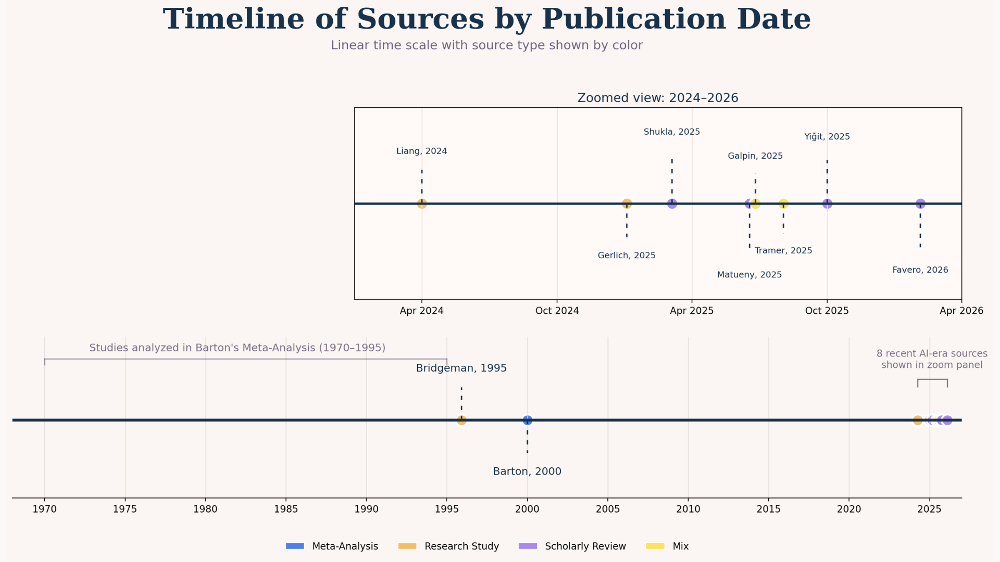

This page summarizes the evidence behind our central question: does AI in education support learning, or does repeated reliance on AI weaken the skills students are supposed to develop?
Our team used a meta-study approach, reviewing historical research on calculators alongside recent studies about generative AI, cognitive offloading, writing patterns, critical thinking, hallucinated citations, and student experiences. We looked for recurring patterns across sources rather than relying on one study alone.
Because long-term educational AI data is still limited, our analysis focuses on early evidence, correlations, and repeated themes across current research.
Matueny and Nyamai describe how AI use can create an illusion of understanding. Users may feel confident in material they did not fully process, contributing to long-term skill degradation.
Galpin et al. found that AI influence appears in whole clusters of stylistic words, not just isolated terms. This supports the idea that AI can shape writing norms and make academic language more homogeneous.
Favero et al. (2026) argue that AI in education affects not just performance, but cognition, agency, and emotional engagement.
